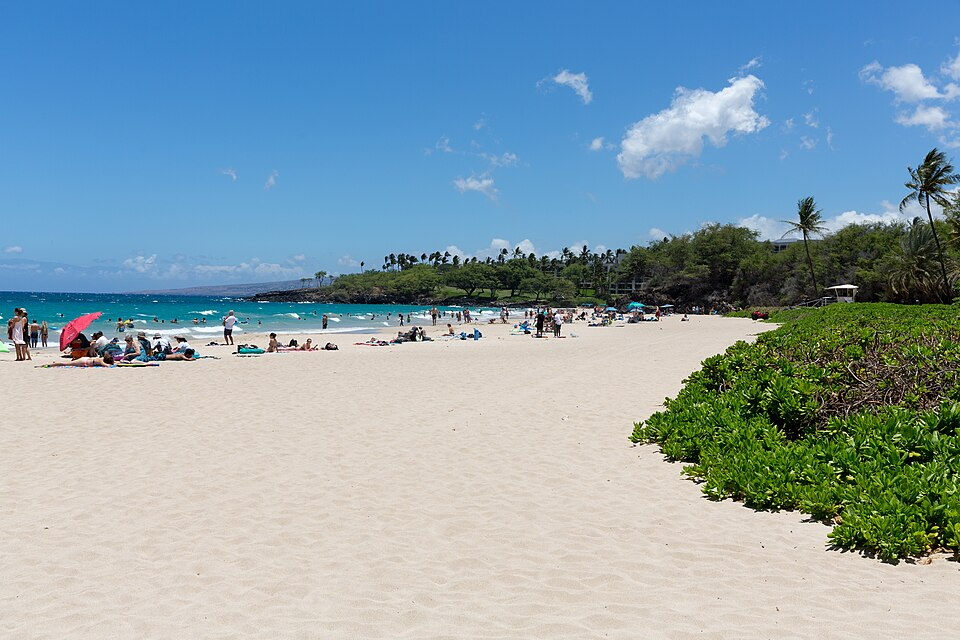

Hāpuna Beach
Place: Hāpuna Beach, Kohala Coast, Hawaiʻi Island
Type: Beach / coastal landscape / freshwater site
Story it tells: A famous white sand beach whose name preserves an older relationship between freshwater springs, survival, and the dry Kohala coast.

Hāpuna Beach is a large white sand beach on the Kohala Coast of Hawaiʻi Island, known today for its broad shoreline, clear water, and popularity with residents and visitors. The name Hāpuna is commonly translated as “spring” or “pool of water,” referring to natural freshwater sources that historically emerged near the beach. Along this dry coastline, those springs connected the shore to water, movement, and survival.
The freshwater springs near the northern end of the beach were an important resource for Native Hawaiians living and traveling along the Kohala coast. In a region where water could be scarce, places where fresh groundwater reached the surface carried practical and cultural importance. The name Hāpuna preserves that relationship between coastal settlement and the hidden sources of water that sustained the people.
The surrounding area also carries deeper traces of Hawaiian life. Archaeological sites and remnants of earlier settlement remain along the coastal landscape, reflecting long use of this shoreline before modern resort development. Nearby places such as Puʻukoholā Heiau further show how the Kohala coast holds layers of chiefly history, travel routes, fishing, and settlement.
In modern times, Hāpuna became one of Hawaiʻi Island’s best-known beaches. The creation of Hāpuna Beach State Recreation Area protected part of the shoreline for public use, while resort development nearby brought the beach into international travel writing and beach rankings. Its white sand and clear water now make it one of the island’s most recognized coastal destinations, but the name points back to freshwater emerging from a dry coast, and the importance of water in shaping Hawaiian places.